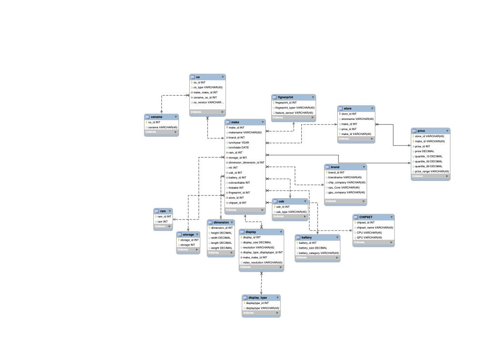

Phone Dataset Business Case Study
In this case study, I applied real-world data management, SQL querying, and data visualization skills to analyze a comprehensive phone dataset. The goal was to generate actionable business insights and present recommendations through a professional dashboard.
I first selected and cleaned a dataset containing information about mobile phones, their specifications, and user ratings. Data cleaning involved handling missing values, standardizing formats, and ensuring relational integrity. I then designed an Entity-Relationship Diagram (ERD) and loaded the cleaned data into a SQL database.
Using SQL, I constructed multiple queries to answer critical business questions such as:
- Which phone brands achieved the highest customer ratings?
- What features most strongly correlate with customer satisfaction?
- Which market segments show the strongest sales opportunities?
After deriving insights through SQL queries, I built dynamic visualizations using Tableau. These dashboards presented KPIs, brand comparisons, customer satisfaction heatmaps, and predictive trends. Visual storytelling allowed stakeholders to easily understand complex patterns hidden in the data.
- Advanced SQL querying (Joins, Aggregations, Subqueries)
- Data modeling and relational database management
- Tableau dashboard creation and visual storytelling
- Business problem solving through data-driven insights
- Presentation and communication of technical results to non-technical audiences
This project solidified my ability to manage a full-cycle data analytics project: from dataset selection, cleaning and loading, business question framing, technical analysis, to storytelling and professional presentation. It represents a key foundation for my continued growth as a data scientist.